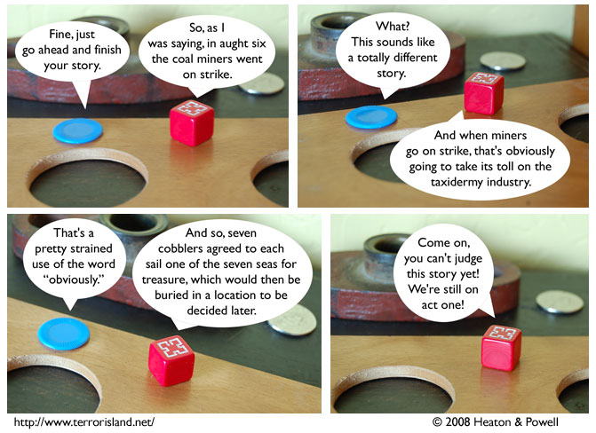

Strip #269
— Friday, February 29, 2008
Jame doesn’t need to eat the whole egg to know he’s too busy for it right now.
Notes, Thoughts, &c.
Ben’s Notes
As you know, the phrase “the seven seas” doesn’t refer to a particular fixed set of seas in real life. It’s more of a figurative term for seas and oceans in general.
But that’s in real life! In the setting of Terror Island, “the seven seas” is understood to always mean the Adriatic Sea, the Mediterranean Sea, the Sargasso Sea, Lake Michigan, the North Sea, the Bering Sea, and Mare Frigoris.
Lewis’s Notes
I never pass up an opportunity to have an old person refer to a year in the early 1900’s as “aught X”. Never.